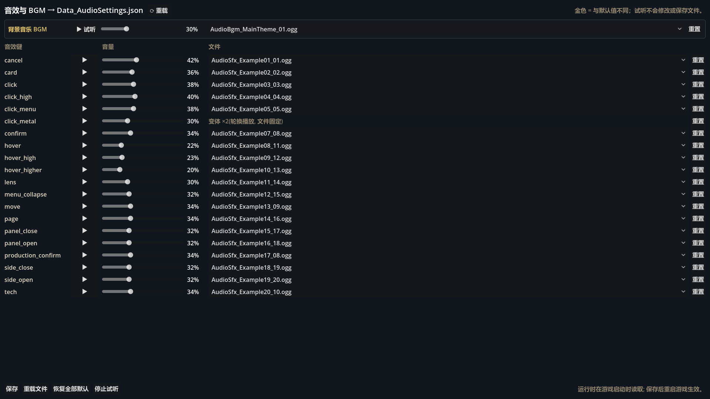

听到结果，再决定是否写入
在 Godot 顶部主屏切换到“BTL 音频”。上方是 BGM，下面逐行列出 20 个 SFX 键；金色名称表示该项与默认值不同，顶部状态会提示是否仍有未保存修改。

默认值保留在游戏数据代码中；编辑器只写 Data_AudioSettings.json 的版本号和差异。删除一个覆盖，就会自然回到当前版本的默认配置。
BGM 与 SFX 各自怎么操作
BGM
选择扫描到的 AudioBgm_* 文件，拖动音量；“试听”会循环播放，再点一次停止。切换曲目时，正在播放的预览会随选择更新。
20 个 SFX
每行用“▶”按当前音量试听，拖动滑条设置该键音量；单文件 SFX 还可改为扫描到的 AudioSfx_* 文件。
停止试听
底部“停止试听”同时停止 BGM 与 SFX，切换编辑器主屏或离开工具时也会清理预览播放。
映射缺失
配置中引用的文件若已移动，会以“缺失”项保留显示；试听时状态栏会明确报告无法找到或加载的文件。
| 操作 | 立即影响 | 是否写盘 |
|---|---|---|
| 试听 / 停止 | 只控制编辑器内预览播放器。 | 否 |
| 拖动音量 / 选择文件 | 更新内存中的差异；正在试听的 BGM 音量同步变化。 | 否，先标记未保存 |
| 单行重置 | 清除 BGM 或指定 SFX 的覆盖。 | 否，仍需保存 |
| 保存 | 清理等于默认值的项，再写入差异 JSON。 | 是 |
变体可以试听轮换，不能在这里拆开改文件
部分 SFX 键在默认配置中是一组变体。编辑器每次点击试听都会轮到下一条，与运行时的轮换语义一致。
变体行显示“变体 ×N（轮换播放，文件固定）”，只能调整整组共用音量，不能在界面中单独替换某个变体文件，也不能改变数量或顺序。需要修改变体集合时，应走默认数据与资源评审，而不是把数组结构塞进差异文件。
单文件 SFX 才会出现文件下拉框。这个限制可避免策划误把一组脚步、金属点击等轮换音效退化成单一重复声音。
保存、文件重载与编辑器重载是三件事
- 定位目标键先试听当前 BGM 或 SFX，确认要解决的是响度、素材映射还是变体内容问题。
- 在内存中调试拖动音量或替换单文件映射，反复试听；金色与“有未保存的修改”用于提醒当前差异。
- 只保留必要覆盖如果结果不优于默认值，点该行“重置”；恢复全部默认会清空所有音频覆盖，仍处于未保存状态。
- 保存差异点击“保存”，工具写入
Data_AudioSettings.json，并重新加载规范化后的差异。 - 重启游戏验证运行时在游戏启动时读取音频覆盖，因此保存后需停止并重新启动游戏，才能验证正式流程。
重载文件
丢弃工具中尚未保存的改动，重新读取 Data_AudioSettings.json。它不重启 Godot。
⟳ 重载 / Ctrl+R
保存并重启整个 Godot 编辑器项目，让已保存的工具脚本改动和主屏结构完全重建。它不是音频配置的“撤销”。
编辑器中的试听直接使用当前内存状态；游戏中的 BGM 与 SFX 使用启动时读取的状态。不要用“编辑器里已经听到了”代替保存后重启的实机验收。
一次音频修改的最低验收
- BGM 可开始、循环、停止，音量与显示百分比一致。
- 目标 SFX 在当前音量下可正常试听。
- 变体键连续试听时按组轮换，而非固定同一条。
- 缺失文件能在状态栏明确暴露。
- 重置后金色差异标记按预期消失。
- JSON 只保留与默认值不同的键。
- 保存后重启游戏，正式 BGM 与 20 个 SFX 映射均可用。
- Ctrl+R 重建编辑器后主屏仍能加载和试听。
先保证同类反馈音量一致，再与 BGM、系统环境音和高频操作节奏一起评估。连续点击会暴露单次试听听不出来的疲劳感和峰值叠加。
文档解释映射，不分发音频
本页只记录工具能力、键名语义和验收方式。所有音频文件继续留在其许可允许的私有范围内。
不得向本站复制、嵌入或提供 assets/audio/ 中的 Civilization VI 对照素材，也不得发布私有仓库中的受限音频、波形导出或可还原音频的派生文件。截图必须保持静态且不含音频数据。
正式项目音频替换前需确认来源、许可、署名要求和再分发范围；编辑器能把文件映射进游戏，不代表该文件自动获得可发布授权。